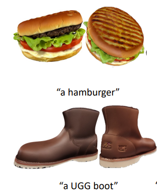
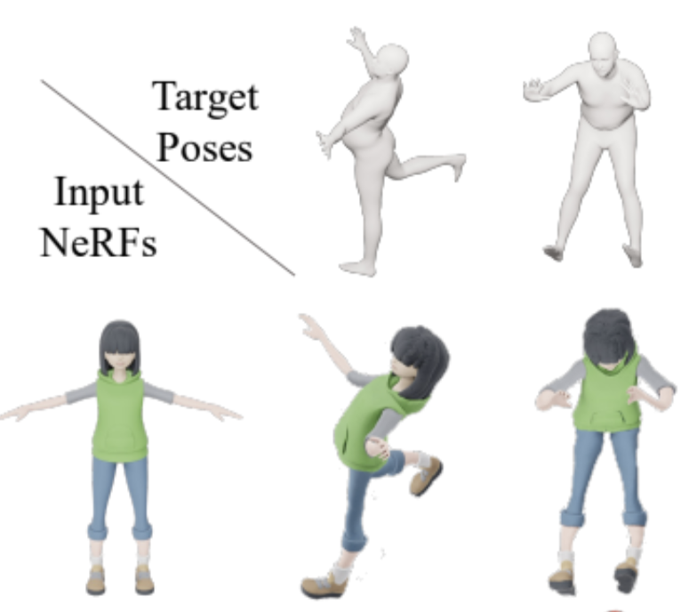
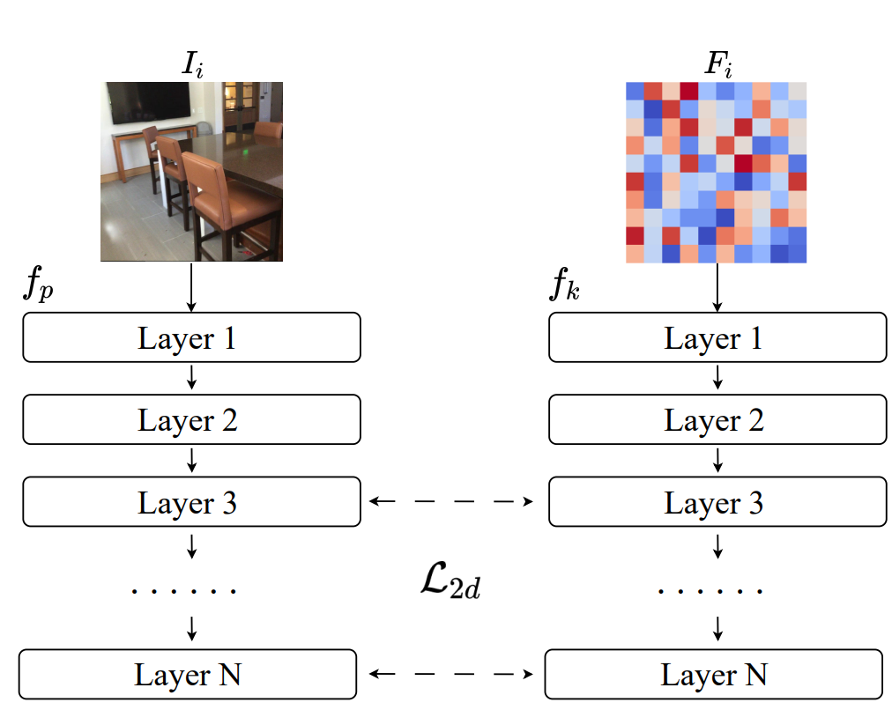
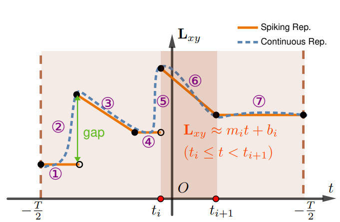
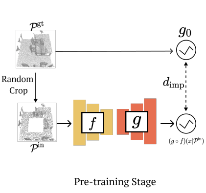
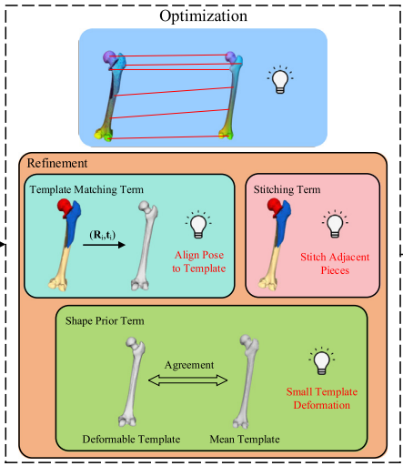
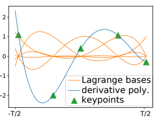
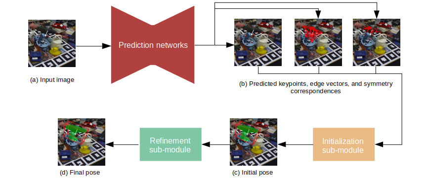
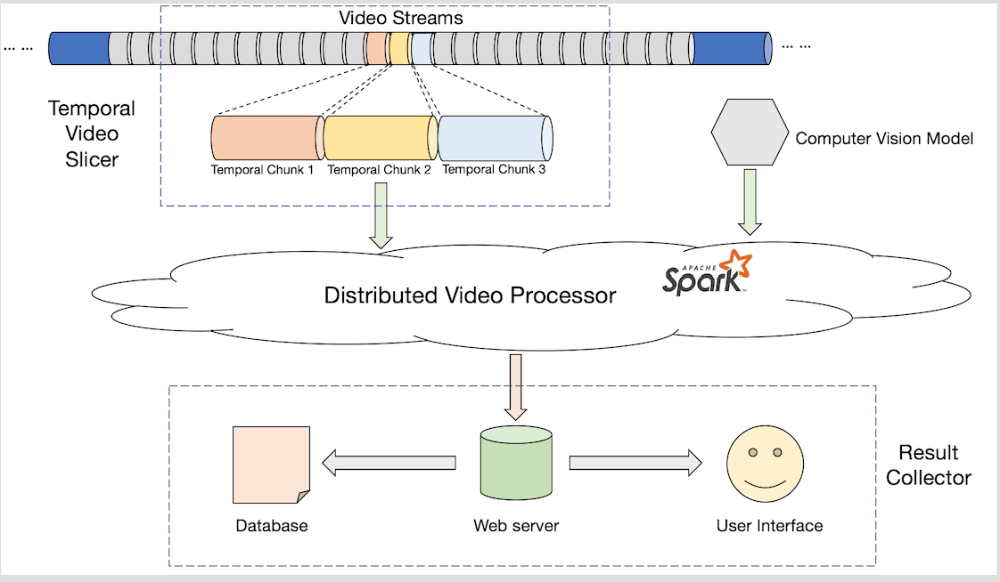
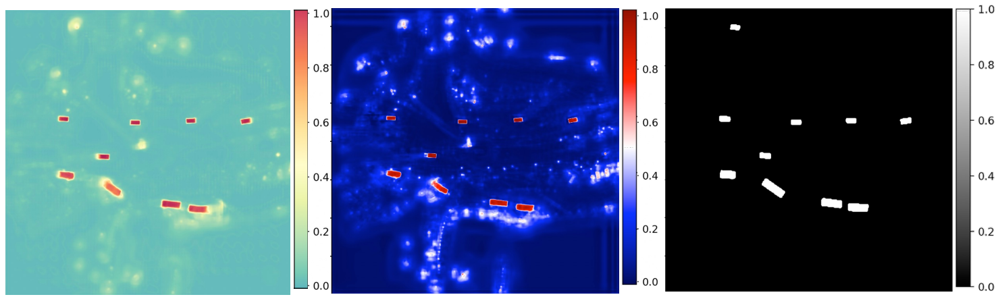

I am a Senior Applied Research Scientist at Cruise. I work on the 3D perception system in autonomous vehicles.
In 2024, I received my Ph.D. degree from the Department of Computer Science at the University of Texas at Austin, advised by Prof. Qixing Huang. In 2019, I received my undergraduate degree from Simon Fraser University and Zhejiang University (Dual-Degree Program). I was advised by Prof. Hao (Richard) Zhang and Prof. Arash (Ali) Mahdavi-Amiri at Simon Fraser University.
[Google Scholar] [LinkedIn] [GitHub]
Personal E-mail: chensong1117 AT gmail DOT com|  |
An Optimization Framework to Enforce Multi-View Consistency for Texturing 3D Meshes Using Pre-Trained Text-to-Image Models Zhengyi Zhao, Chen Song, Xiaodong Gu, Yuan Dong, Qi Zuo,Weihao Yuan, Zilong Dong, Liefeng Bo, Qixing Huang Proceedings of the European Conference on Computer Vision (ECCV 2024) [Paper] |
|  |
TutteNet: Injective 3D Deformations by Composition of 2D Mesh Deformations Bo Sun, Thibault Groueix, Chen Song, Qixing Huang, Noam Aigerman Proceedings of the IEEE/CVF Conference on Computer Vision and Pattern Recognition (CVPR 2024) [Paper] [Code] |
|  |
Multi-View Representation is What You Need for Point-Cloud Pre-Training Siming Yan, Chen Song, Youkang Kong, Qixing Huang Proceedings of the International Conferences on Learning Representations (ICLR 2024) [Paper] |
|  |
DeblurSR: Event-Based Motion Deblurring Under the Spiking Representation Chen Song, Chandrajit Bajaj, Qixing Huang Proceedings of the Thirty-Eighth AAAI Conference on Artificial Intelligence (AAAI 2024) [Paper] [Code] [Visualization] |
|  |
Implicit Autoencoder for Point-Cloud Self-Supervised Representation Learning Siming Yan, Zhenpei Yang, Haoxiang Li, Chen Song, Li Guan, Hao Kang, Gang Hua, Qixing Huang Proceedings of the IEEE/CVF International Conference on Computer Vision (ICCV 2023) [Paper] [Code] |
|  |
TAssembly: Data-driven fractured object assembly using a linear template model Ziyue Deng, Junfeng Jiang, Zhengming Chen, Wenxi Zhang, Qingqiang Yao, Chen Song, Yifan Sun, Zhenpei Yang, Siming Yan, Qixing Huang, Chandrajit Bajaj Computers & Graphics, Volume 113, June 2023, Pages 102-112 [Paper] |
|  |
E-CIR: Event-Enhanced Continuous Intensity Recovery Chen Song, Qixing Huang, Chandrajit Bajaj Proceedings of the IEEE/CVF Conference on Computer Vision and Pattern Recognition (CVPR 2022) [Paper] [Code] [Visualization] |
|  |
HybridPose: 6D Object Pose Estimation under Hybrid Representations Chen Song, Jiaru Song, Qixing Huang Proceedings of the IEEE/CVF Conference on Computer Vision and Pattern Recognition (CVPR 2020) [Paper] [Code] |
|  |
Scalable Distributed Visual Computing for Line-Rate Video Streams Chen Song, Jiacheng Chen, Ryan Shea, Andy Sun, Arrvindh Shriraman, Jiangchuan Liu Proceedings of ACM Multimedia Systems Conference (MMSys 2018) [Paper] |
|  |
LiDAR-Based 3D Object Detection via Hybrid 2D Semantic Scene Generation Haitao Yang, Zaiwei Zhang, Xiangru Huang, Min Bai, Chen Song, Bo Sun, Li Erran Li, Qixing Huang arXiv pre-print [Paper] |